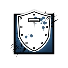

Gilles "Montagne" Touré
Every conflict is an iteration upon the last. Every scar, a victory.
Gameplay Description
A Heavy Health Operator, Montagne comes equipped with his Extendable Shield, "Le Roc", which can fully cover him from head-to-toe while standing, providing extra protection that no other shield in the game offers. This also allows him to be the ultimate point-man, blocking enemy bullets as allies attack from his protection. When not extended, the Extendable Shield behaves like a normal Ballistic Shield.
Montagne will absorb 66% of damage dealt from any source of explosive damage. This applies to all operators standing behind the shield.
Device Description
Can expand his Extendable Shield to offer full protection while standing.
Le Roc was first issued in the late 1980s. A composite of reinforced alloys and Kevlar, its sturdiness and well-designed collapsible feature has made it a staple in GIGN operations for nearly thirty years.
Touré’s shield is the only original Le Roc still in service. Though it has seen its fair share of conflict, the device has become an extension of Touré, having saved his life and members of his team on multiple occasions. It will most likely remain on active duty until Touré retires.